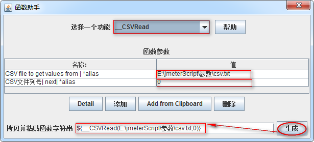
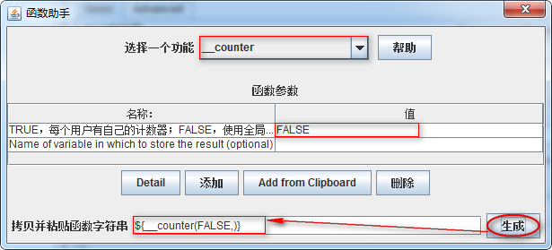
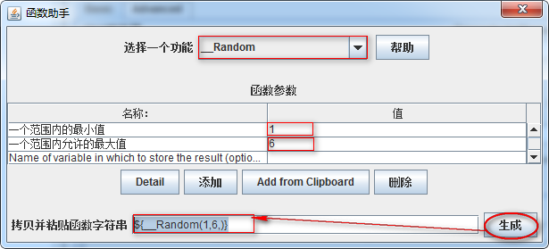
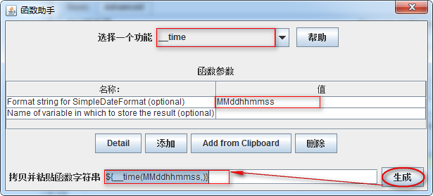
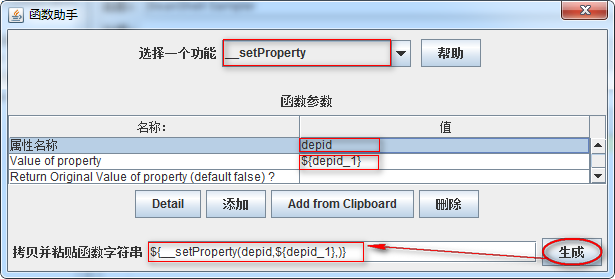
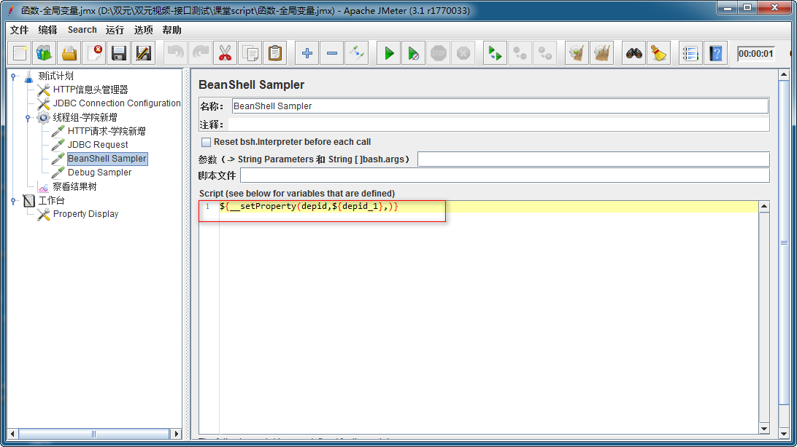
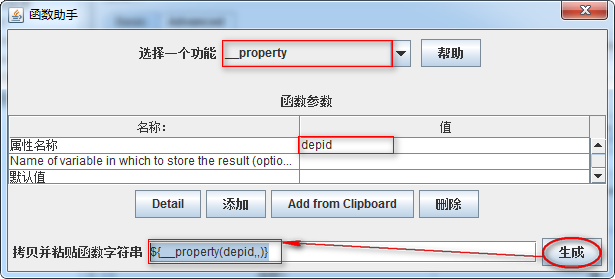

Jmeter 函数
目标
- 掌握常用Jmeter常用函数;
1. Jmeter函数是什么？
可以被认为是某种特殊的变量，它们可以被采样器或者其他测试元件所引用。
2. 为什么要学习函数？
1. 使用函数我们可以1次【批量】的对学院资源进行新增
2. 使用函数我们可以利用函数读取外部数据进行参数化
3. 使用函数我们可以设置指定动态数据的数据为全局变量
2.1 Jmeter常用函数
1. __CSVRead
2. __counter
3. __Random
4. __time
5. __setProperty
6. __property
以上为我们使用Jmeter测试项目时常用的函数，接下来我们将逐个学习；
2.2 在学习这些函数之前我们先介绍下：
1) Jmeter函数格式
2) 函数助手对话框
2.3 Jmeter函数的格式
1. ${__functionName(var1,var2,var3)}
1) ${} 函数引用固定格式和参数化相同
2) __functionName匹配被调用的函数名称；
3) 用圆括号包含函数的形参，例如${__time(YMD)}，不同函数要求的参数也不同；
4) 有些JMeter函数不要求参数，则可以不使用圆括号，例如${__threadNum};
2.4 函数助手对话框
作用：对Jmeter中自带函数的参数设置和生成使用
启动方式：
1) 菜单（选项）-->函数助手对话框
2) Ctrl+Shift+F1
3) 工具栏倒数第二个 图标"记事本"
3. __CSVRead 函数
作用：csvRead函数是从外部读取参数，csvRead函数可以从一个文件中读取多个参数
3.1 案例1
通过CSVRead函数读取csv.txt内容，作为请求时接口所需参数的值使用
http://127.0.0.1:8000/api/departments/?$dep_id_list=${__CSVRead(E:\jmeterScript\参数\csv.txt,0)}
,${__CSVRead(E:\jmeterScript\参数\csv.txt,1)}
csv.txt内容
T01,T02
T03,T04
T05,T06
3.2 操作分析
1. 测试计划->线程组
2. 线程组->HTTP请求
3. 函数助手对话框->__CSVRead
4. 测试计划->监听器->察看结果树
3.3 技术难点
1. __CSVRead 参数设置
2. 线程组 (线程数)
3.4 __CSVRead 参数配置图

1. 选择一个功能：选择__CSVRead
2. CSV file to get values from | *alias：要读取的文件路径-(绝对路径)
3. CSV文件列号| next| *alias：从第几列开始读取，注意第一列是0
4. 点击生成函数引用格式
5. 全选复制
3.5 __CSVRead-总结：
1. 绝对路径
2. 列的开始索引
3. 多行参数使用线程数
4. __counter函数
作用：这个函数是一个计数器，用于统计函数的使用次数
4.1 案例2
使用counter计次函数，请求(查询学院-所有)10次,为每次请求做计次标识
http://127.0.0.1:8000/api/departments/?num=${__counter(FALSE,)}
4.2 操作分析
1. 测试计划->线程组
2. 线程组->HTTP请求
3. 函数助手对话框->__counter
4. 测试计划->监听器->察看结果树
4.3 技术难点
1. __counter函数参数设置
2. 设置计数参数名
4.4 __counter函数配置图

1. TRUE，每个用户有自己的计数器；FALSE，使用全局计数器:
1) TRUE: 每个用户有自己的计数器，可以用于统计每个线程各执行了多少次
2) FALSE: 使用全局计数器，可以统计出这次测试共运行了多少次用
4.5 __counter函数-总结
1. __counter函数作用
2. __counter函数与指定值配合使用 num=${__counter(FALSE,)}
5. __Random函数
作用：随机生成一个指定范围内的数值
5.1 案例3
使用__Random函数对请求(查询学院-指定)进行随机查询
http://127.0.0.1:8000/api/departments/T0${__Random(1,6,)}/
5.2 操作分析
1. 测试计划->线程组
2. 线程组->HTTP请求
3. 函数助手对话框->__Random
4. 测试计划->监听器->察看结果树
5.3 技术难点分析
1. __Random函数参数设置
5.4 __Random函数配置图

1. 一个范围内的最小值:随机数生成时开始数，也是最小数
2. 一个范围内允许的最大值:随机生成结束数，也是最大数
5.5 __Random-总结
1. __Random作用
2. __Random设置
6. __time函数
作用：获取当前电脑日期时间 比如：MMddhhmmss 月/日/时分秒
6.1 案例4
使用__time函数解决迭代(学院-新增)dep_id重复问题
JSON报文：
{
"data": [
{
"dep_id":"time${__time(MMddhhmmss,)}",
"dep_name":"Test学院",
"master_name":"Test-Master",
"slogan":"Here is Slogan"
}
]
}
6.2 操作分析
1. 测试计划->HTTP信息头管理器
2. 测试计划->线程组
3. 线程组->HTTP请求
4. 函数助手对话框->__time函数
5. 测试计划->监听器->察看结果树
6.3 技术难点分析
1. HTTP信息头管理器设置
2. HTTP新增请求方法
3. __time函数参数
6.4 __time函数参数配置图

1. Format string for SimpleDateFormat (optional)：
1) 为空：返回毫秒
2) 设置格式：MMddhhmmss 月/日/时/分/秒
6.5 __time函数-总结
1. __time作用
2. __time参数设置
7. __setProperty函数
作用：用于把指定数据设定成Jmeter属性，可以理解为是把指定数据设置成全局变量
7.1 案例5
1. 通过__setProperty函数把新增的学院ID，设置成全局变量
7.2 操作分析
1. 测试计划-HTTP信息头管理器
2. 测试计划->JDBC Connection Configuration
3. 测试计划->线程组(学院-新增)
4. 线程组->HTTP请求(HTTP请求-学院新增)
5. 线程组->JDBC Request
6. 函数助手对话框->__setProperty函数
7. 线程组->BeanShell Sampler
8. 线程组->Debug Sampler
9. 测试计划->察看结果树
10. 工作台->Property Display
7.3 技术难点分析
1. __setProperty函数参数设置
2. BeanShell Sampler作用
3. JDBC Request SQL语句
4. 如何知道设置的属性(全局变量)成功了
7.4 __setProperty函数参数配置图

1. 属性名称:要设置的属性名称也就是全局变量名
2. Value of property:属性的值(全局变量的值)
7.5 BeanShell Sampler 组件配置图
作用：可执行JavaScript的一种容器

7.6 Property Display
作用：显示Jmeter工具中的属性
7.7 __setProperty函数-总结
1. __setProperty作用
2. 如何查看Jmeter已有的属性
7.8 需求
如何获取__setProperty设置的属性，作为指定查询的dep_id？
8. __property函数
作用：获取Jmeter中属性值
8.1 解决方案分析
1. 选中案例5中测试计划-独立运行每个线程组选项
2. 基于案例5中测试计划->线程组(线程组-读取depid属性)
3. 线程组(线程组-读取depid属性)->HTTP请求(HTTP请求-读取depid属性)
4. 函数助手对话框-__property函数
8.2 实施难点分析
1. __property函数参数设置
8.3 __property函数配置图

1. Name of variable in which to store the result (optional):获取属性的名称
8.4 __property函数-总结
1. __property作用
9. 常用函数-总结
1. __CSVRead
2. __counter
3. __Random
4. __time
5. __setProperty
6. __property